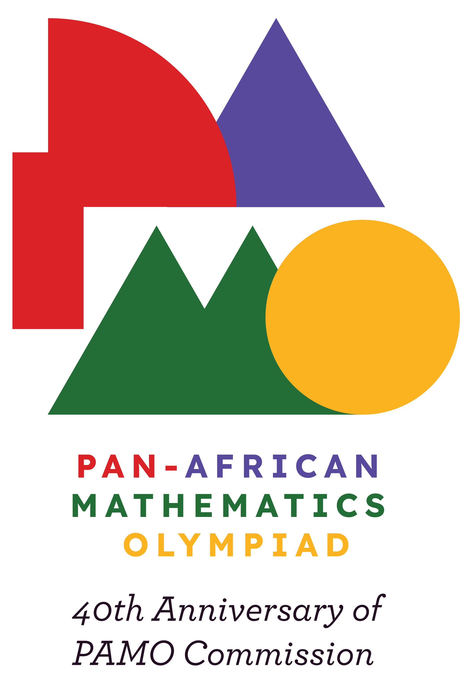
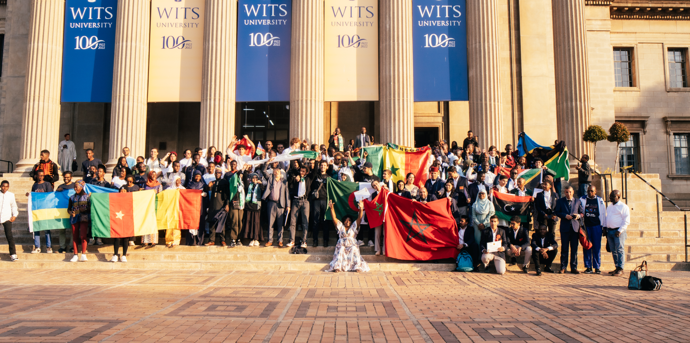

The Pan-African Mathematics Olympiad (PAMO) is Africa’s flagship championship for secondary-school students, held annually in a rotating host country. Established in 1986 by the African Mathematical Union (AMU) through its Commission on Pan-African Mathematics Olympiads (AMUPAMOC), PAMO has run almost every year since 1987, gathering the continent’s most promising young mathematicians to celebrate excellence and community.
Each participating nation may enter up to six students, all under 20 years old. The competition consists of two 4½-hour papers, each containing three proof-based problems scored out of 7 points (maximum 42). Beyond awarding medals and prizes, PAMO nurtures talent, fosters Pan-African collaboration, and helps the AMU identify and support the next generation of mathematical leaders.

To encourage and spotlight girls’ participation, PAMO also publishes PAMO-G—a dedicated ranking for female contestants based on the same papers and marking scheme. PAMO-G recognises top-performing girls across the continent and supports national efforts to broaden participation in advanced mathematics.